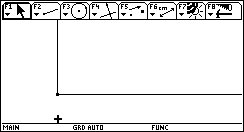
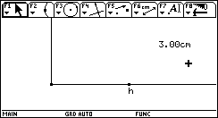
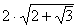
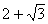
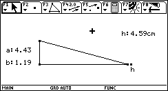
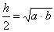

PROBLEMA 60 – LABORATORIO DE TRIÁNGULOS
"Construya un triángulo rectángulo de hipotenusa dada tal que la mitad de la longitud de la misma sea la media geométrica de sus catetos"
SOLUCIÓN Profesor: Arbey Luque Díaz Leticia - Amazonas - Colombia
En Cabri, se construye una especie de plano cartesiano con dos semirrectas perpendiculares y de origen común. Se dibuja un punto sobre una de las semirrectas y se mide su distancia al origen, esta es la longitud de la hipotenusa.


La longitud de un primer cateto (a) se puede calcular dividiendo la hipotenusa entre

. Y para el segundo cateto (b) basta multiplicar el primero por el factor
. Se transfieren estos resultados a cada una de las semirrectas y con vértice en estos puntos y en el origen se construye el triángulo.
Haciendo los respectivos cálculos, se puede verificar que

.